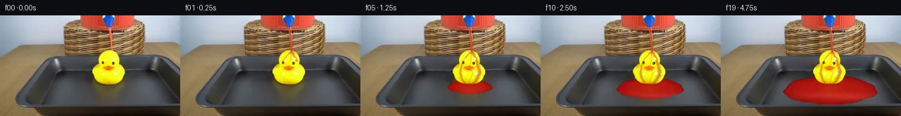

![首帧]()

Round 00
2026-11-05T05:13:04.670483+00:00像素候选变化代码 +185/−0inspection 更新
pixels ac1a8bdd7a2a37c9 · code 4106f4a73ab33beb
查看本轮 generate.py 真实 diff
--- previous/generate.py
+++ current/generate.py
@@ -0,0 +1,185 @@
+"""Deterministic, source-image-based pixel animation; no learned model or external renderer."""
+from pathlib import Path
+import numpy as np
+from PIL import Image, ImageDraw
+from scipy.ndimage import gaussian_filter, map_coordinates
+import artifact_io
+
+ROOT = Path(__file__).resolve().parent
+S = 4
+W, H = 256, 144
+src = np.asarray(Image.open(ROOT/'first_frame.png').convert('RGB'))
+base = np.asarray(Image.fromarray(src).resize((W*S,H*S), Image.Resampling.BICUBIC)).astype(float)
+y,x = np.mgrid[0:H*S,0:W*S].astype(float)
+x=(x+.5)/S-.5; y=(y+.5)/S-.5
+rng=np.random.default_rng(86)
+noise=gaussian_filter(rng.normal(size=x.shape),2.8)
+noise/=np.std(noise)
+
+def smooth(a,b,v):
+ v=np.clip((v-a)/(b-a),0,1)
+ return v*v*(3-2*v)
+
+def polygon(points):
+ m=Image.new('L',(W*S,H*S)); d=ImageDraw.Draw(m)
+ d.polygon([(int((a+.5)*S),int((b+.5)*S)) for a,b in points],fill=255)
+ return np.asarray(m)/255.
+
+floor=polygon([(72,79),(210,79),(233,98),(255,121),(255,127),(37,127),(41,111),(59,88)])
+duck=smooth(120,170,base[:,:,0])*smooth(112,185,base[:,:,1])*(1-smooth(70,130,base[:,:,2]))
+duck*=smooth(47,50,y)*(1-smooth(100,102,y))*smooth(128,132,x)*(1-smooth(177,180,x))
+duck=np.clip(duck,0,1)
+# Stream pixels in the original source, used to replace only the moving liquid.
+oldstream=polygon([(152.7,17),(155.9,17),(160,50.4),(157.2,50.4)])
+# Reconstruct a narrow background strip from either side of the existing stream.
+left=np.stack([map_coordinates(base[:,:,c],[y*S+1.5,(x-4.5)*S+1.5],order=1,mode='nearest') for c in range(3)],axis=-1)
+right=np.stack([map_coordinates(base[:,:,c],[y*S+1.5,(x+4.5)*S+1.5],order=1,mode='nearest') for c in range(3)],axis=-1)
+streambg=(left+right)/2
+
+def blend(im,col,a):
+ a=np.clip(a,0,1)[...,None]
+ return im*(1-a)+np.asarray(col)*a
+
+def path_dist(points):
+ # Points follow y monotonically, giving subpixel smooth flow lanes.
+ pts=np.array(points,float)
+ center=np.interp(y,pts[:,1],pts[:,0])
+ return x-center
+
+flow_right=path_dist([(158,51),(160,55),(163.5,61),(165,67),(167,73),(169,80),(167,87),(163,94),(159,98)])
+flow_left=path_dist([(157,51),(154,54),(149,60),(144.8,67),(142.5,74),(141.3,82),(143.4,90),(148,97)])
+flow_middle=path_dist([(157.5,51),(157,58),(156.5,64),(155.5,70),(156,76),(159,82),(156,90),(154,98)])
+
+
+def make_frame(i):
+ if i==0:return src.copy()
+ t=i/4
+ im=base.copy()
+ im=blend(im,streambg,oldstream*.92)
+ # Ground-plane pool. Feed begins when runoff reaches the duck's base.
+ p=np.clip((t-.43)/4.32,0,1)
+ growth=np.sqrt(p)
+ cy=98+9*growth
+ rx=5+61*growth
+ ry=2.1+18.3*growth
+ theta=np.arctan2((y-cy)/ry,(x-155)/rx)
+ irregular=1+.025*np.sin(5*theta+.5)+.017*np.sin(9*theta-1.1)+.008*np.sin(15*theta)
+ rr=np.sqrt(((x-155)/rx)**2+((y-cy)/ry)**2)/irregular
+ edge=smooth(-.38,.38,(1-rr)*ry)
+ coverage=edge*floor*(1-duck)*smooth(0,.18,p)
+ # A dark underside and the meniscus reveal the thin liquid over the tray.
+ shadow=gaussian_filter(edge,2.8)*floor*(1-duck)*.15*smooth(0,.12,p)
+ im=blend(im,[41,25,20],shadow)
+ depth=smooth(0,.42,1-rr)
+ red=154+28*depth+7*np.sin((y-90)*.13)+2*noise
+ col=np.stack([red,12+7*depth+noise,9+4*depth+.7*noise],axis=-1)
+ # Broad soft environment reflection, with shallow wave slopes.
+ reflection=np.exp(-((y-(115+1.2*np.sin(x*.055+t*2)))/5.4)**2)*np.exp(-((x-178)/62)**2)
+ col+=reflection[...,None]*np.array([30,25,21])
+ # A subdued, distorted reflection of the yellow duck in the liquid.
+ reflx=154+1.1*np.sin(y*1.4-t*5)+.35*np.sin(y*2.8+t*3)
+ duckreflect=np.exp(-((x-reflx)/13)**2)*np.exp(-((y-105)/6.3)**2)*.18
+ col=col*(1-duckreflect[...,None])+np.array([207,114,8])*duckreflect[...,None]
+ # Travelling rings from runoff on either side of the duck; low amplitude.
+ ripple=np.zeros_like(x)
+ for ox,oy,phase in [(144,96,.1),(165,96,.7)]:
+ r=np.sqrt(((x-ox)*.72)**2+((y-oy)*1.9)**2)
+ ring=np.sin(r*1.6-t*11+phase)*np.exp(-r/16)*smooth(1.2,4,r)
… diff truncated; 98 more lines …